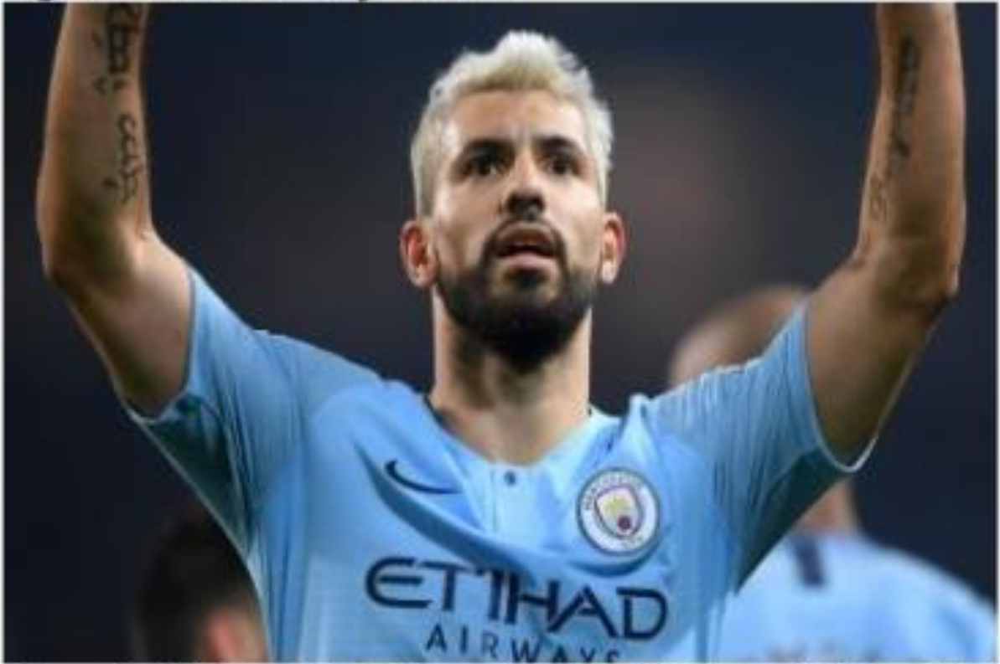

Man City hạ Bournemouth 3-1 trên sân khách ở vòng ba Ngoại hạng Anh hôm nay 25/8.
Agureo lập cú đúp giúp Man City trở lại quỹ đạo thắng. Ảnh: AP.
Lợi thế sân nhà giúp Bournemouth có cơ hội đầu tiên sau khi De Bruyne mất bóng giữa sân bay phút thứ nhất. Joshua King chớp thời cơ dứt điểm nhưng bóng trúng thủ môn Ederson. Chủ nhà tỏ ra hưng phấn và khiến tốc độ trấn đấu được đẩy cao. Hàng thủ đội khách để lộ nhiều điểm yếu và khiến Ederson phải hoạt động vất vả. Phút 13, thủ moon Brazil phải lao ra ngoài cấm địa để phạm lỗi với Callum Wilson, dẫn tới thẻ vàng.